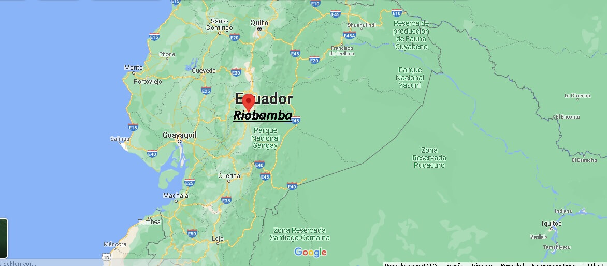

| HOME | GALERÍA | SITUACIÓN GEOGRÁFICA | COSTUMBRES | SITIOS TURÍSTICOS |
Riobamba es una ciudad situada en el centro geográfico de Ecuador, en la región Sierra o Interandina. Esta ubicación privilegiada le otorga un papel importante como punto de conexión entre distintas regiones del país: la Costa, la Sierra y la Amazonía. Ubicada a una altitud aproximada de 2.754 metros sobre el nivel del mar, Riobamba se encuentra en una meseta andina rodeada por imponentes cadenas montañosas y volcanes, como el Chimborazo, el más alto del país y uno de los más emblemáticos. Este entorno montañoso influye tanto en su clima —templado y seco— como en sus actividades económicas, especialmente la agricultura, la ganadería y el turismo. Su posición central dentro del país también ha facilitado el desarrollo de vías de comunicación y comercio. Gracias a esta situación geográfica, Riobamba es considerada un punto clave para el transporte terrestre y el intercambio de productos entre distintas regiones del Ecuador. En resumen, la situación geográfica de Riobamba no solo define su paisaje y clima, sino también su relevancia económica, histórica y cultural en el país.
Riobamba está ubicada en el centro del Ecuador, dentro de la región Sierra o Interandina, y es la capital de la provincia de Chimborazo. Su posición geográfica es muy importante porque la sitúa como un punto de paso entre la Costa, la Sierra y la Amazonía. Gracias a su ubicación en una meseta andina, rodeada de montañas y volcanes como el Chimborazo, Riobamba goza de un clima templado y seco, ideal para actividades agrícolas y turísticas. Además, por estar bien conectada por carreteras, Riobamba ha tenido un papel fundamental en el desarrollo del comercio y del transporte terrestre a lo largo de la historia del Ecuador. Su ubicación también ha sido clave durante la época colonial y republicana, lo que la convierte en una ciudad con gran valor histórico y estratégico.

🔹 Latitud: 1° 40′ Sur
🔹 Longitud: 78° 38′ Oeste
Riobamba es una ciudad andina del centro de Ecuador, ubicada en la región Sierra a 2.754 m de altitud. Su posición geográfica la convierte en un punto clave de conexión entre la Costa, la Amazonía y otras ciudades del país. Tiene un clima templado seco de montaña, con días frescos y noches frías. Rodeada de volcanes como el Chimborazo, su entorno influye en sus actividades económicas como la agricultura, el comercio y el turismo.
Riobamba, al estar ubicada en una zona andina de gran altitud, presenta una flora y fauna adaptada al clima frío de montaña. Su vegetación incluye páramos, pajonales, chuquiraguas (flor andina), y árboles nativos como el polylepis o “árbol de papel”. En cuanto a fauna, es posible encontrar llamas, alpacas, conejos silvestres, y aves como el cóndor andino, especialmente en las zonas cercanas al volcán Chimborazo y áreas protegidas. Esta biodiversidad está influenciada por su altitud, clima seco y ecosistemas de páramo.